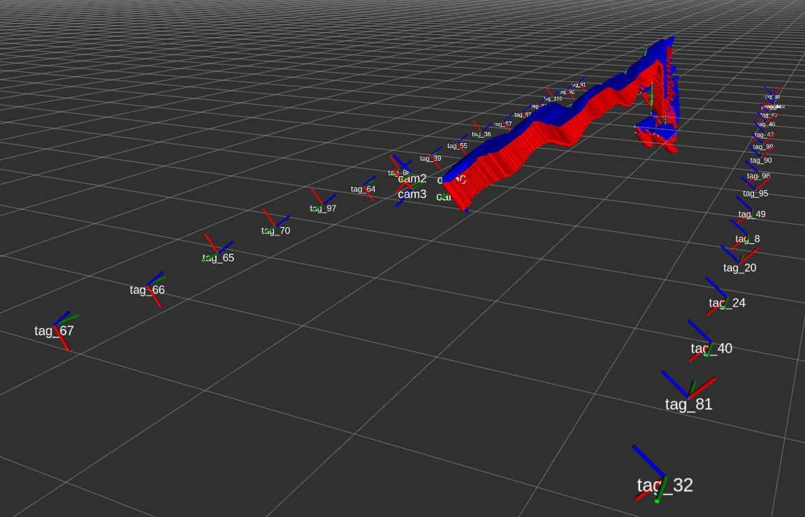

TagSLAM: Localization and mapping with tags
TagSLAM is a ROS based package for simultaneous multi-camera localization and mapping (SLAM) with the popular AprilTags.
TagSLAM can also solve several sub problems related to SLAM:
- Mapping: walk around with a camera and discover tag poses whenever multiple tags are visible in the same frame.
- Localization: if you have the tags mapped already, you can enter their poses as fixed input, and later just localize off those tags.
- Extrinsics camera calibration: TagSLAM supports synchronized multi-camera systems, and therefore can be used to find the relative poses of multiple cameras.

(Image shows the poses of a quad rotor platform flying in a tunnel (pennstock) with a 4-camera setup, dataset courtesy of Tolga Ozaslan)